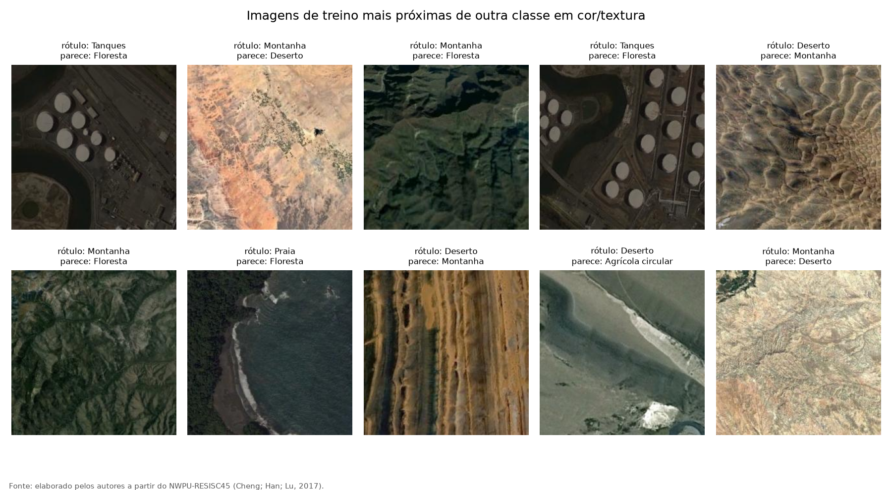
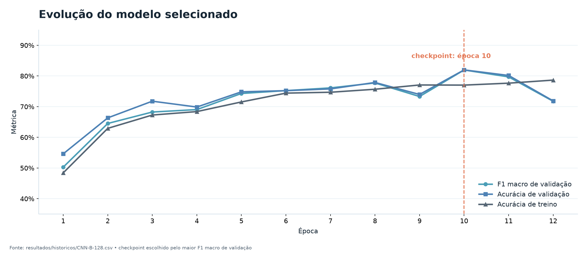
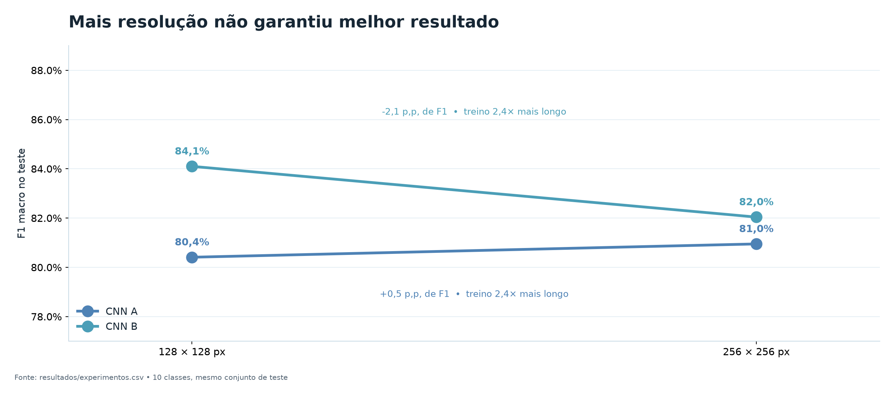
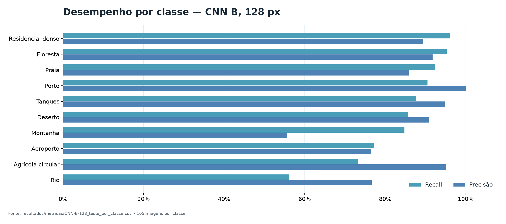
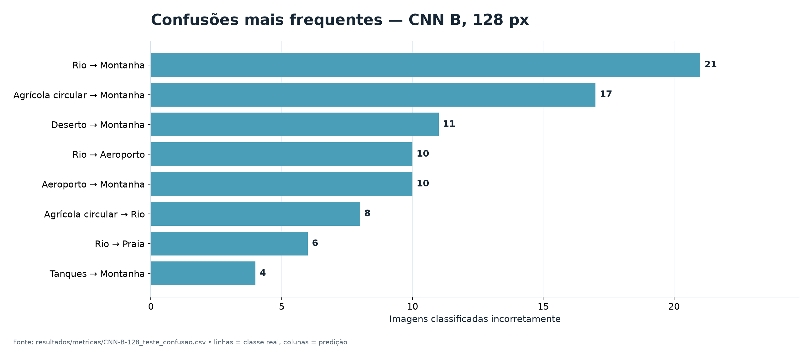
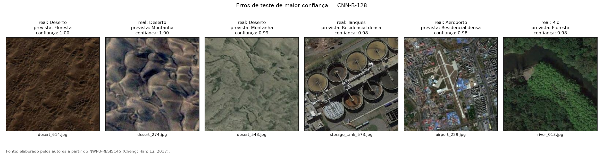

Projeto 3
CLASSIFICAÇÃO DE CENAS AÉREAS COM REDES NEURAIS
MLP, CNN e o efeito da resolução no NWPU-RESISC45
Identificar o tipo de cena em fotos aéreas: aeroporto, floresta, rio ou porto.
Comparamos arquiteturas e tamanhos de imagem sob o mesmo protocolo de treino.

| Modelo | F1 validação | F1 teste | Acurácia teste | Tempo de treino |
|---|---|---|---|---|
| MLP A · 128 px | 0,541 | 0,530 | 0,543 | 96,5 s |
| MLP B · 128 px | 0,533 | 0,526 | 0,557 | 118,2 s |
| CNN A · 128 px | 0,817 | 0,804 | 0,810 | 157,1 s |
| CNN B · 128 px | 0,820 | 0,841 | 0,839 | 182,3 s |
| CNN A · 256 px | 0,807 | 0,810 | 0,814 | 380,3 s |
| CNN B · 256 px | 0,817 | 0,820 | 0,820 | 434,6 s |




